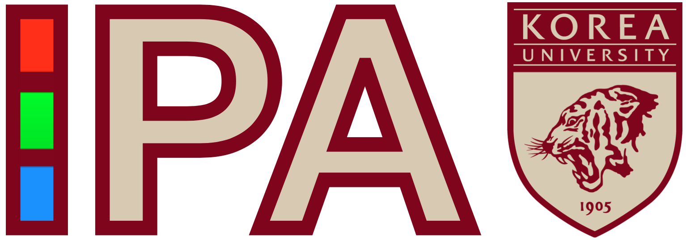

Image Processing Algorithm Lab. @ EE, Korea University
|  | 고려대학교 영상처리알고리즘 연구실에 오신것을 환영합니다. |
Notices
석사과정 | 박사과정 대학원생 모집> Opening
News
[2024 JUL 01] 2 papers have been accepted to ECCV 2024! > Link
[2024 JUN 24] Our Lab member, Woo Kyoung Han granted a Ph.D. candidate fellowship from NRF!
(2024.SEP-2026.AUG) Integrated Data Compression and Lightweight Network Performance Restoration through Quantum-Enhanced Restoration
[2024 APR 03] Prof. Jin will serve as an Area Chair for NeurIPS24 .
[2024 FEB 27] One paper has been accepted to CVPR 2024!
[2024 JAN 29] Our paper has been accepted to ICRA 2024! > [PDF]
[2024 JAN 20] Our paper,“Machine learning-based high-frequency neuronal spike reconstruction from lowfrequency and low-sampling-rate recordings” has been accepted to Nature Communications (IF:16.6)! [PDF]
[2024 JAN 03] 2 papers have been accepted to WACV 2024! > Link
Contact
Email : kyong_jin@korea.ac.kr
교수오피스 : 공학관 403호
사무실전화 : 02-3290-3259
주소 : 02841 서울특별시 성북구 안암로 145 고려대학교 공과대학 공학관403호
Address:
room 403, Engineering Building, College of Engineering,
145 Anam-ro, Seongbuk-gu, Seoul, 02841, Korea
Phone(office) : +82-2-3290-3259
 Image Processing Algorithm Lab. (IPA)
Image Processing Algorithm Lab. (IPA) School of Electrical Engineering, College of Engineering, Korea University
Page generated 2024-11-03 18:07:34 KST, by jemdoc.